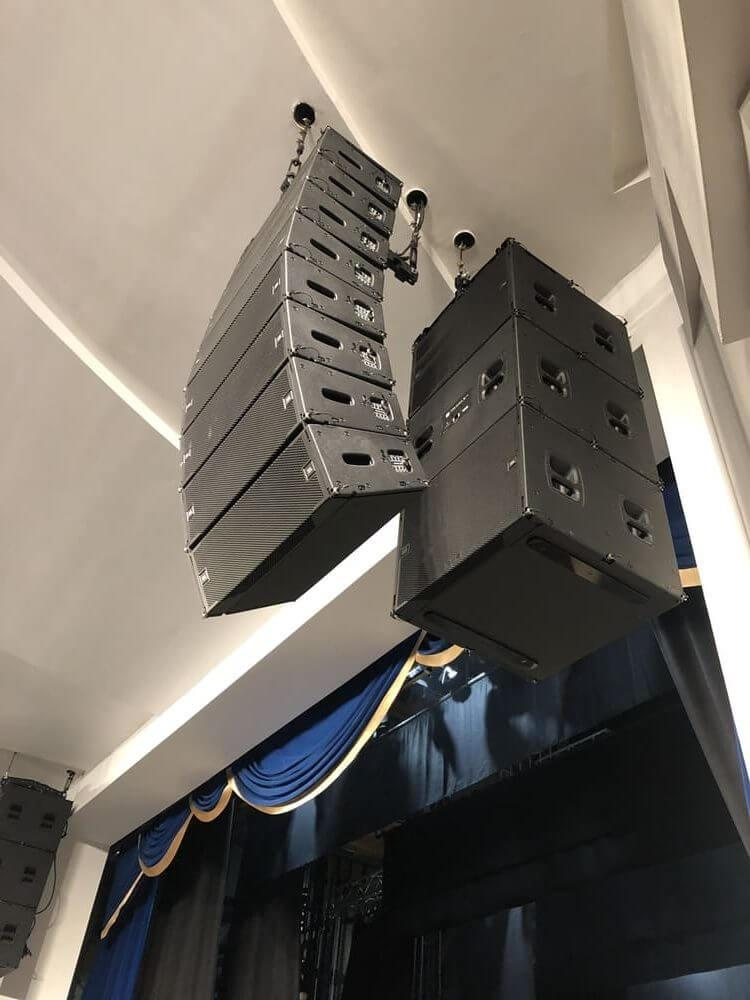
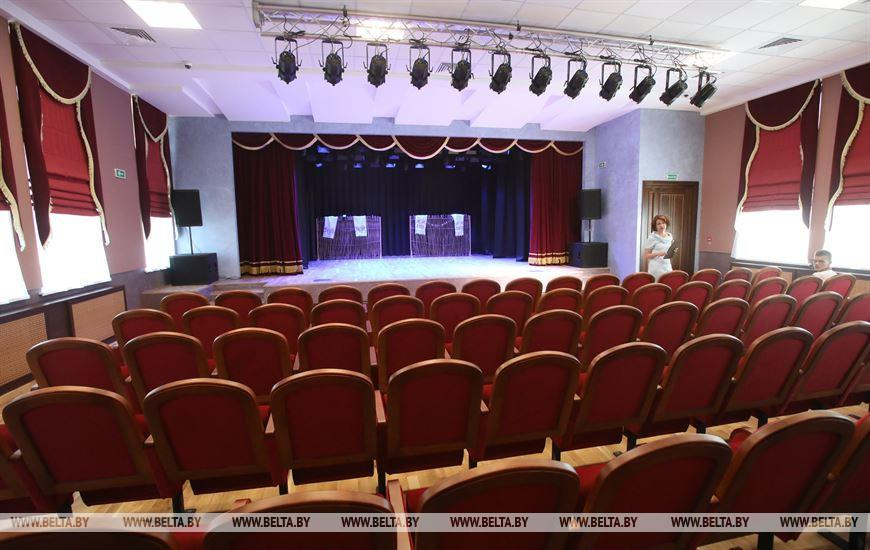

Театр им. Мележа г.Мозырь
2020

В 2020г. была завершена долгожданная реконструкция драматического театра им. Мележа, в процессекоторой была осуществлена инсталяция системы звукоусиления, а также системы постановочногоосвещения в «большом» и «малом» залах.

Звуковое обеспечение в «Большом» зале представлена профессиональными системами в виде линейного массива
По обе стороны от сцены: 8 х JBL VTX А8 и 3 х JBL VTX
В18 в кардиоидной конфигурации;
Мониторная линия: 4 х JBL VTX M20;
Портальные прострелы: 4 x JBL SRX 815;
Усиление: Crown I-Tech 4x3500HD;
Цифровая микшерная консоль: Soundcraft Vi1000.
Системы постановочного освещения представлены брендами MARTIN, PROLIGHTS.
Полноповоротные световые приборы: 16 x Martin ERA 300
Profile; 12 x Martin MAC Aura XB; 24 x Prolights RUBY.
Приборы заливающего света: 8 x Martin RUSH BATTEN 1 HEX.
Профильные прожекторы четырёх типов: 16 x Martin ELP WW; 12 x Martin ELP CL; 20 x Prolights ECLISEPARDY;
18 x Prolights ECLISEPARFC.
Для дополнительных атмосферных эффектов используются: Martin Jem Compact Haze; Martin Jem ZR35;
Antari S-500E.
Пульт управления светом и другими DMX-совместимыми устройствами: ChamSys MagicQ MQ500
«Малый» зал

Звуковое обеспечение в «Малом» зале представлена профессиональными активными системами JBL SRX815P и SRX818SP.
Мониторная линия: 4 х JBL SRX812P;
Микшерная консоль: Soundcraft Signature 12MTK;
Системы постановочного освещения представлены приборами PROLIGHTS.
Полноповоротные световые приборы: 8 x ProLights JETSPOT4Z;
Приборы заливающего света: 22 x Flash LED PAR 64 COB SHORT Mk2 200W RGBW;
Профильные прожекторы: 12 x Prolights ECLISEPARTY.
Для дополнительных атмосферных эффектов используются: Martin Jem Compact Haze; Martin Jem ZR35;
Пульт управления светом: ChamSys QuickQ 20;